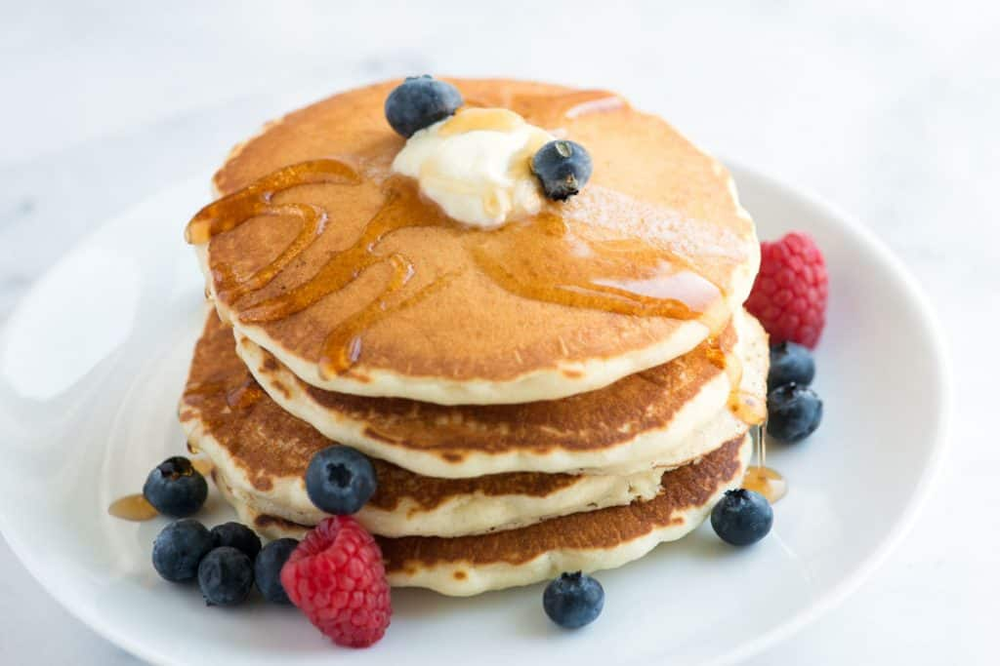

Pancakes

These pancakes are tall and fluffy. This recipe will not only include the pancakes,
but also will include a berry topping on top!
Ingredients
- 1 1/2 cups all-purpose flour
- 3 1/2 tsp baking powder
- 1/4 tsp salt, or more to taste
- 1 tbsp white sugar
- 1 1/4 cups milk
- 1 egg
- 3 tbsp butter, melted
Directions
- In a large bowl, sift together the flour, baking powder, salt and sugar.
- Make a well in the center and pour in the milk, egg and melted butter; mix until smooth.
- Heat a lightly oiled griddle or frying pan over medium-high heat.
Pour or scoop the batter onto the griddle, using approximately 1/4 cup for each pancake.
Brown on both sides and serve hot.